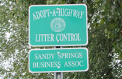

Adopt a Road
Keep Sandy Springs North Fulton Beautiful has partnered with Fulton County Public Works and the Georgia DOT to offer opportunities for residents to get more involved in keeping North Fulton clean. The Adopt a Road program is offered to any group interested in volunteering for a two year period. Picking up roadside litter helps to maintain the cleanliness of our streets and serves as a reminder to others that littering behavior is unsightly.
Both adults and children can take an active role in selecting one to two mile length of roadway to maintain a minimum of four times a year. We can help them select a road or it may be a road of their own choosing. Keep Sandy Springs North Fulton Beautiful provides orange reflective vests and trash bags. Once the road is cleaned the volunteers contact our office and we then notify Public Works for bag pick up. One of the benefits for volunteers is a road sign which identifies the group or family that has adopted that stretch of road.